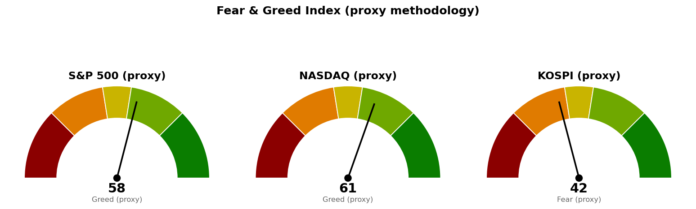

미국 지수·섹터·금리·유가·변동성지수는 뉴욕 9월 17일 확정 종가입니다. 코스피와 니케이 225는 9월 18일 장중 수치로 한국시간 12:01~12:03 조회분이며, 코스피 세션은 15:30에 끝납니다. 아래 코스피 판정에 '아직 진행 중'이 붙은 이유가 이것입니다.
직전은 뉴욕 9월 17일 세션이 1시간 30분 진행된 시점에 썼고, 미국 쪽 판정을 전부 '진행 중'으로 남겨 두었습니다. 그 세션이 마감됐으므로 이번에 확정 종가로 판정합니다.
| 직전에 건 조건 | 판정 | 근거 |
|---|---|---|
| S&P 500 일봉 종가 7,604 회복 → 축소 검토 해제 | 충족 | 확정 종가 7,638로 34포인트(하루 평균 변동폭 67.60의 0.50배) 위에서 마쳤습니다 |
| S&P 500 도착지 7,760 (고가 도달) | 미충족 | 고가 7,647로 113포인트(1.68배) 아래에서 멈췄습니다 |
| S&P 500 경고 해제 7,668 그리고 30년 금리 5.286% 아래 | 둘 다 미충족 · 금리는 조금 벌어짐 | 지수는 30포인트(0.45배) 아래이고, 30년 금리 확정 종가 5.296%는 조건선보다 0.010%포인트 위입니다. 직전에 인용한 장중 5.294%(0.008%포인트)에서 0.002%포인트 벌어진 채 마쳤습니다 |
| S&P 500이 7,568 아래 마감 → 추가 축소 | 미충족 | 저가 7,612로 44포인트(0.65배) 위에서 버텼습니다 |
| 나스닥 기준선 26,271 회복 | 충족 | 확정 종가 26,418로 147포인트(하루 평균 변동폭 323.10의 0.46배) 위입니다 |
| 나스닥 도착지 26,680 (고가 도달) | 미충족 | 고가 26,461로 219포인트(0.68배) 아래입니다 |
| 나스닥 못 지키면 26,030 | 지킴 | 저가 26,290으로 260포인트(0.80배) 위입니다 |
| 코스피 기준선 6,815 회복 | 아직 진행 중 | 9월 18일 장중 6,857로 42포인트(하루 평균 변동폭 237.39의 0.18배) 위이나, 판정 방식이 일봉 종가이고 세션은 15:30에 끝납니다. 자동 채점은 이 진행 중인 값을 종가로 읽어 충족으로 잡았는데, 이번 브리핑은 그것을 판정으로 치지 않습니다 |
| 코스피 못 지키면 6,600 | 지킴 | 9월 18일 저가 6,831로 231포인트(0.97배) 위입니다 |
| 코스피 도착지 7,025 (고가 도달) | 미충족 | 9월 18일 고가 6,886으로 139포인트(0.59배) 아래입니다 |
"못 지키면 어디까지"가 실제로 어디까지 갔는지 적습니다. 직전은 S&P 500 7,568 · 나스닥 26,030 · 코스피 6,600을 적었습니다. 세 지수 모두 그쪽으로 가지 않았고, 저가는 각각 7,612 · 26,290 · 6,831에서 멈춰 44포인트 · 260포인트 · 231포인트 위였습니다.
직전 계획은 살아 있고 예고한 다음 단계로 넘어갑니다. 직전이 "7,604 위에서 마치면 9월 18일 12:01 브리핑이 세 지수의 회차와 취소선을 낸다"고 적었고, 그 조건이 충족돼 이번 브리핑이 사다리를 냅니다.
기준선을 옮긴 곳과 그대로 둔 곳을 나눠 적습니다.
| 지수 | 직전 기준선 | 이번 기준선 | 사유 |
|---|---|---|---|
| S&P 500 | 7,604 | 7,668 | 7,604가 종가로 충족돼 위로 통과했습니다. 7,668은 직전에도 경고 해제 조건선으로 적혀 있던 같은 숫자이며, 새로 만든 가격이 아닙니다 |
| 나스닥 | 26,271 | 26,680 | 26,271이 종가로 충족됐습니다. 26,680은 직전 도착지로 적혀 있던 같은 숫자입니다 |
| 코스피 | 6,815 | 6,815 (그대로) | 판정이 아직 끝나지 않았으므로 옮기지 않습니다. 도착지 7,025 · 못 지키면 6,600 · 다음 지지 6,409도 직전과 같은 숫자입니다 |
직전 리포트의 수치 하나를 정정합니다. 직전은 코스피 9월 17일 종가를 6,699로 적었으나, 확정값은 6,715였습니다. 16포인트 차이이며 판정 결과는 바뀌지 않습니다(둘 다 기준선 6,815 아래이고 6,600 위). 직전이 "확정 종가가 제공되지 않아 시간별 거래 자료의 마지막 체결가로 채웠다"고 밝힌 값이 그만큼 어긋났다는 기록입니다. 같은 이유로 직전이 인용한 금리·유가·변동성지수 장중값도 확정 종가와 조금씩 다릅니다 — 30년 금리 5.294% → 5.296%, WTI 100.76달러 → 101.21달러, 변동성지수 15.83 → 15.44입니다.
직전 판단에서 방향을 틀리게 본 것은 없습니다. 직전은 축소 검토 단계에서 방향을 말하지 않고 기준선과 두 갈래만 냈고, 가격은 위쪽 갈래로 갔습니다.
하루 평균 변동폭이 셋 다 바뀌었습니다. S&P 500 67.58 → 67.60, 나스닥 320.04 → 323.10, 코스피 242.55 → 237.39입니다. 아래 배수는 모두 새 값으로 계산했습니다.
| 줄 | 내용 |
|---|---|
| 현재 위치 | 7,638 (9/17 확정 종가, +1.14%, 시가 7,631 · 고가 7,647 · 저가 7,612). 20일선(최근 20일 평균 가격선이되 최근 가격에 더 무게를 두는 지수이동평균) 7,644보다 7포인트(하루 평균 변동폭 67.60의 0.10배) 아래, 50일선 7,602보다 36포인트(0.53배) 위. 상대강도지수(최근 14일 동안 오른 폭과 내린 폭의 비율을 0~100으로 나타낸 값) 49.6 |
| 기준선 | 7,668 (직전의 경고 해제 조건선과 같은 숫자) — 일봉 종가로 위에서 마쳐야 인정합니다. 현재가에서 30포인트(0.45배) 위입니다. 장중에 지나가는 것은 판정이 아닙니다. 신규 종목 편입을 재개하려면 여기에 더해 30년 금리 5.286% 아래가 같이 충족돼야 합니다 |
| 지키면 | 7,760. 7,750 단위 가격과 8월 28일 스윙 고점 7,771이 겹치고 9거래일 전에도 반응했습니다(겹침 점수 2.3). 현재가에서 122포인트(1.81배) 위입니다. 그 위 7,801(8월 13일 고점 7,817 + 90일 박스 상단 7,794, 점수 3.5)이 다음 저항입니다 |
| 못 지키면 | 7,604. 7,600 단위 가격과 50일선 7,602, 9월 1일 스윙 저점 7,611이 모인 구간(7,600~7,611, 겹침 점수 3.3)이며 현재가에서 34포인트(0.50배) 아래입니다. 여기를 종가로 잃으면 되찾은 자리를 다시 내준 것으로 보고 축소 검토로 돌아갑니다. 그 아래 다음 지지는 7,568(7,550 단위 가격 + 5회 반응 가격대 + 6월 15일·7월 15일 스윙 고점, 점수 4.5)로 70포인트(1.03배) 아래입니다 |
| 매수 사다리 | 1차 7,604 · 계좌의 3% / 2차 7,568 · 계좌의 3% / 취소선 7,511(7,500 단위 가격 + 7회 반응 가격대 7,522, 점수 3.3, 현재가에서 127포인트·1.88배 아래). 취소선은 일봉 종가로 잃을 때 판정하며, 그때 남은 회차를 집행하지 않습니다. 두 회차가 다 물려 취소선에서 정리하면 계좌 대비 -0.06%입니다 |
| 예상 기간 | 기준선 7,668까지 0.45일치, 도착지 7,760까지 1.81일치, 1차 회차 7,604까지 0.50일치, 취소선까지 1.88일치 변동폭입니다. 기준선과 1차 회차는 모두 한 세션 안에 닿을 수 있는 거리입니다 |
7,604는 사다리 1차이면서 되돌림 판정선입니다. 두 역할이 부딪히지 않도록 판정 방식을 나눠 씁니다 — 장중에 7,604를 터치하면 1차 회차를 집행하고, 일봉 종가로 그 아래에서 마치면 축소 검토로 돌아가며 남은 회차를 멈춥니다. 같은 가격이지만 터치와 종가 이탈은 다른 사건입니다.
90일 박스는 7,282~7,794이고, 박스 내부는 지지 테스트마다 매도 거래량이 늘고 저점은 절상되는 상태라 매집·분산 어느 쪽 우위도 판정되지 않았습니다. 직전 90일 구간(6,475~7,048)에서 위로 올라와 이 박스에 들어온 상태입니다. 직전과 같습니다.
| 줄 | 내용 |
|---|---|
| 현재 위치 | 26,418 (9/17 확정 종가, +1.69%, 시가 26,378 · 고가 26,461 · 저가 26,290). 20일선 26,236보다 183포인트(하루 평균 변동폭 323.10의 0.57배) 위, 50일선 26,095보다 324포인트(1.00배) 위. 상대강도지수 53.9 |
| 기준선 | 26,680 (직전 도착지와 같은 숫자) — 26,600 단위 가격과 8월 5일 고점 26,739, 6월 16일 고점이 겹치고 9거래일 전에도 반응했습니다(겹침 점수 2.3). 일봉 종가로 위에서 마쳐야 인정하며, 현재가에서 262포인트(0.81배) 위입니다 |
| 지키면 | 26,976. 90일 박스 상단 26,951과 27,000 단위 가격이 겹치고 24거래일 전에 반응했습니다(겹침 점수 2.3). 현재가에서 557포인트(1.73배) 위입니다. 가는 길에 8월 13일 고점 26,876 부근(26,789~26,876, 점수 2.3)을 먼저 넘어야 합니다 |
| 못 지키면 | 26,271. 26,200 단위 가격과 20일선 26,236, 8회 반응 가격대 26,289, 7월 15일 스윙 고점 26,317이 겹치는 구간(26,200~26,317, 점수 4.0)이며 현재가에서 147포인트(0.46배) 아래입니다. 여기를 종가로 잃으면 다음은 26,030(9월 1일 스윙 저점 25,996 + 26,000 단위 가격 + 50일선 26,095, 점수 3.3)으로 388포인트(1.20배) 아래입니다 |
| 매수 사다리 | 1차 26,271 · 계좌의 3% / 2차 26,030 · 계좌의 3% / 취소선 25,904(25,800 단위 가격 + 8월 24일 스윙 저점 25,911 + 7회 반응 가격대, 점수 4.5, 현재가에서 514포인트·1.59배 아래). 일봉 종가로 취소선을 잃으면 남은 회차를 집행하지 않습니다. 두 회차가 다 물려 취소선에서 정리하면 계좌 대비 -0.06%입니다 |
| 예상 기간 | 기준선 26,680까지 0.81일치, 도착지 26,976까지 1.73일치, 1차 회차 26,271까지 0.46일치, 취소선까지 1.59일치 변동폭입니다 |
26,271도 S&P 500의 7,604와 같은 두 역할을 합니다. 장중 터치는 1차 회차 집행이고, 일봉 종가로 그 아래에서 마치면 되찾은 자리를 다시 내준 것이라 남은 회차를 멈춥니다.
90일 박스는 24,807~26,951이고 박스 안에서 저점이 낮아지고 있어 매집·분산 어느 쪽 우위도 판정되지 않았습니다. 직전과 같습니다. 이번 도착지 26,976은 그 박스 상단 26,951보다 25포인트 위에 있습니다.
| 줄 | 내용 |
|---|---|
| 현재 위치 | 6,857 (9/18 장중 12:01, +2.11%, 시가 6,886 · 고가 6,886 · 저가 6,831). 20일선 6,785보다 72포인트(하루 평균 변동폭 237.39의 0.30배) 위, 50일선 6,876보다 18포인트(0.08배) 아래. 상대강도지수 51.8 |
| 기준선 | 6,815 (직전 그대로) — 일봉 종가로 위에서 마쳐야 인정합니다. 20일선 6,785와 50일선 6,876이 모인 구간(6,785~6,876, 겹침 점수 1.5) 안입니다. 현재가가 42포인트(0.18배) 위에 있으나 세션이 15:30까지 남아 있어 판정된 것이 아닙니다 |
| 지키면 | 7,025 (직전 그대로). 5월 20일부터 이어진 6회 반응 가격대에 7,000 단위 가격과 스윙 고점 6,996·스윙 저점 7,054가 겹치며 지지에서 저항으로 역할이 바뀌었습니다(겹침 점수 4.5). 현재가에서 168포인트(0.71배) 위입니다 |
| 못 지키면 | 6,600 (직전 그대로). 6,600~6,702 겹침 구간의 하단이며, 이 구간은 6,600 단위 가격 + 4회 반응 선반 + 저항에서 지지로 바뀐 자리 + 주봉 38.2% 되돌림선 6,673 + 일봉 61.8% 되돌림선 6,702가 모여 겹침 점수 7.0으로 세 지수 통틀어 가장 두껍습니다. 현재가에서 257포인트(1.08배) 아래입니다. 여기를 종가로 잃으면 다음은 6,409(5회 반응 가격대 + 6,400 단위 가격 + 9월 3일 스윙 저점 6,439, 점수 4.5)로 448포인트(1.89배) 아래이고, 그 아래는 40일 박스 하단 6,024까지 576포인트(2.43배)가 비어 있습니다 |
| 매수 사다리 | 1차 6,702 · 계좌의 2%(구간 상단, 일봉 61.8% 되돌림선) / 2차 6,651 · 계좌의 2%(구간 중심) / 취소선 6,600(구간 하단, 일봉 종가 하회로 판정). 두 회차가 다 물려 취소선에서 정리하면 계좌 대비 -0.05%입니다 |
| 예상 기간 | 도착지 7,025까지 0.71일치, 1차 회차 6,702까지 0.65일치, 2차 6,651까지 0.87일치, 취소선 6,600까지 1.08일치 변동폭입니다 |
코스피 사다리는 세 가격이 0.43일치 변동폭 안에 모여 있습니다. 1차 6,702에서 취소선 6,600까지가 102포인트이고 하루 평균 변동폭은 237포인트이므로, 한 세션 안에 세 가격을 모두 지나갈 수 있습니다. 회차를 나눠 담는 효과가 크지 않다는 뜻이며, 그래도 이 자리에 거는 이유는 겹침 점수 7.0이 세 지수에서 가장 두꺼운 근거이기 때문입니다. 비중을 미국 두 지수의 3%가 아니라 2%로 낮춘 것도 같은 이유입니다.
40일 박스는 6,024~7,128이고 박스 안쪽은 저점이 절상되고 있으나 지지 테스트 거래량이 혼조라 매집·분산 어느 쪽 우위도 판정되지 않았습니다. 직전 브리핑이 '매집 우위'로 적은 대목이 이번 산출물에서는 '중립'으로 바뀌었습니다 — 박스 판정 기간이 갱신되면서 지지 테스트 거래량 추세가 '감소'에서 '혼조'로 달라진 데 따른 것입니다. 직전 40일 구간(7,308~9,160)에서 아래로 내려와 이 박스에 들어온 상태라는 점은 그대로입니다.
코스피 계획은 미국장 결과에 선행 종속됩니다. 오늘 코스피 +2.11%는 어젯밤 미국 반등(S&P 500 +1.14% · 나스닥 +1.69%)을 받은 것이고, 15:30 마감 뒤 이어질 뉴욕 9월 18일 세션이 다음 코스피 시가를 정합니다. 세 지수 기준선이 이번에는 모두 위쪽을 가리켜 방향이 갈리지 않았으나, 코스피 단독 신호만으로 결론을 앞당기지 마십시오.
세 지수 회차를 전부 집행하면 계좌의 16%(S&P 500 6% · 나스닥 6% · 코스피 4%)가 지수 노출로 들어갑니다. 세 지수가 모두 취소선까지 밀려 정리하는 최악의 경우 계좌 대비 -0.16%입니다. 이 값이 작은 이유는 취소선이 각 1차 회차에서 1.2~1.5% 아래에 붙어 있기 때문이며, 갭으로 취소선을 건너뛰고 열리면 실제 손실은 이보다 커집니다.
지수 포인트로만 적었으므로 어떤 종목·ETF로 집행할지는 사용자가 정합니다.
| 지수 | 종가/현재 | 등락 | 고가 | 저가 |
|---|---|---|---|---|
| S&P 500 (9/17 확정) | 7,638 | +1.14% | 7,647 | 7,612 |
| 나스닥 종합 (9/17 확정) | 26,418 | +1.69% | 26,461 | 26,290 |
| 코스피 (9/18 장중) | 6,857 | +2.11% | 6,886 | 6,831 |
| 니케이 225 (9/18 장중) | 64,662 | +0.82% | 64,852 | 64,404 |
미국 두 지수는 전 세션 종가 위에서 갭을 두고 열려 그 위를 지키고 마쳤습니다. S&P 500의 장중 폭은 35포인트(0.52배)로 전 세션 119포인트(1.82배)의 3분의 1 이하이고, 나스닥도 171포인트(0.53배)로 전 세션 422포인트의 절반 아래입니다. 전날 연준 인상에 되밀린 폭을 되찾는 움직임이되 그 되찾기가 좁은 범위 안에서 이뤄졌습니다.
코스피는 시가 6,886이 그대로 고가였고 저가 6,831까지 55포인트를 반납한 뒤 6,857에 있습니다. 미국 반등을 시가에 한 번에 반영하고 그 안에서 좁게 움직이는 모양입니다. 니케이 225는 시가 64,682로 열려 고가 64,852까지 올랐다가 64,662로 되밀려 있어, 코스피와 달리 시가 위를 한 번 더 시험한 뒤 시가 부근으로 돌아왔습니다.
미국 섹터를 20일 초과수익(SPDR 업종 ETF의 지수 대비 초과 성과)으로 줄 세운 결과입니다. 하루치 등락률이 아니라 이 값이 주도섹터 판정 기준입니다.
| 주도 (20일 초과) | 20일 | 5일 | 1일 | 부진 (20일 초과) | 20일 | 1일 | |
|---|---|---|---|---|---|---|---|
| 기술 (XLK) | +3.32% | +0.93% | +1.11% | 산업재 (XLI) | -6.20% | -0.96% | |
| 에너지 (XLE) | +2.33% | -1.30% | -0.44% | 임의소비재 (XLY) | -5.16% | -0.04% | |
| 커뮤니케이션 (XLC) | +1.84% | +0.16% | -1.71% | 유틸리티 (XLU) | -4.38% | -0.24% |
기술이 이틀째 1위입니다. 2위와 3위는 자리를 맞바꿔 에너지가 +1.79%에서 +2.33%로 올라섰고 커뮤니케이션은 +2.20%에서 +1.84%로 내렸습니다. 하루치로도 기술 ETF가 +2.25%로 지수를 1.11%포인트 앞서 반등을 이끌었고, 커뮤니케이션은 -0.58%로 지수를 1.71%포인트 밑돌아 두 섹터가 하루 안에서도 반대로 갔습니다.
금리에 민감한 금융은 20일 초과 -1.87%, 하루치 -1.23%포인트로 사흘 연속 지수를 밑돌았습니다. 30년 금리가 5.349%에서 5.296%로 내린 날에도 금융이 지수를 따라가지 못했습니다.
한국 섹터는 테마형 ETF 기준이라 미국 업종 ETF와 성격이 다릅니다. 20일 초과수익 상위는 건설 +19.11%, AI전력기기 +13.12%, 2차전지 +7.83%, 은행 +7.82%, 조선 +3.11%, 반도체 +2.93%이고, 하위는 자동차 -8.85%, 헬스케어 -8.64%, 증권 -3.37%입니다. 직전에 1위였던 은행(+11.97%)이 4위로 내려가고 건설과 AI전력기기가 1·2위로 올라와 순위가 바뀌었습니다. 하루치로는 AI전력기기가 +2.54%포인트로 앞서고, 은행 -3.07%포인트·헬스케어 -3.37%포인트·조선 -3.04%포인트가 뒤졌습니다.
오늘 12:03 발굴이 뽑은 한국 후보는 둘입니다. SGC Energy (005090.KS)(건설, 진입 52,463원 · 손절 47,147원 · 목표 66,844원 · 손익비 1:2.70 · 손절 폭은 하루 평균 변동폭의 1.07배)와 KumhoElec (001210.KS)(AI전력기기, 진입 10,819원 · 손절 9,401원 · 목표 14,175원 · 손익비 1:2.37 · 손절 폭은 하루 평균 변동폭의 1.00배)입니다. 구조 엔진이 낸 후보일 뿐 정식 종목 리포트가 아니며, 관심종목에 자동으로 들어가지 않습니다 — 등록 여부는 사용자가 정합니다. 관심종목 목록은 현재 비어 있습니다. 1차로 128개를 훑어 거래대금 미달 70개, 추세 미달 35개, 우선주·중복 상장 11개, 52주 고점 대비 위치 이탈 5개, 이미 보고 있는 종목 2개, 상대강도 미달 2개, 현재가 추격 비권장 1개가 걸러졌습니다.
SGC Energy는 어제 후보에도 올랐는데 진입가가 57,676원에서 52,463원으로, 손익비가 1:1.85에서 1:2.70으로 달라졌습니다. 같은 종목이라도 하루 사이 구조 판정이 이만큼 움직이므로, 후보 가격을 어제 값으로 기억해 쓰지 마십시오.
| 항목 | 9/17 확정 종가 | 9/16 종가 | 등락 |
|---|---|---|---|
| 미 10년 국채 금리 | 4.947% | 5.006% | -1.18% |
| 미 30년 국채 금리 | 5.296% | 5.349% | -0.99% |
| WTI | 101.21달러 | 102.43달러 | -1.19% |
| 브렌트유 | 103.96달러 | 105.83달러 | -1.77% |
| 변동성지수 (VIX) | 15.44 | 17.71 | -12.82% |
10년 금리가 5% 아래 4.947%로 내려 마쳤습니다. 전날 연준 인상 직후 5%를 다시 넘었던 것을 하루 만에 되돌린 자리입니다.
30년 금리 5.296%는 신규 편입 재개 조건선 5.286%에서 0.010%포인트 위입니다. 9월 14일 0.043%포인트 → 9월 15일 0.078%포인트 → 9월 16일 0.063%포인트로 벌어져 있던 것이 이번에 0.010%포인트까지 좁혀졌습니다. 직전이 인용한 장중값 0.008%포인트보다는 0.002%포인트 벌어진 채 마감했습니다. 같은 조건의 다른 한쪽인 S&P 500 7,668은 30포인트 아래이고, 두 조건은 같이 충족돼야 합니다.
유가는 나흘 연속 빠졌습니다. WTI는 102.43달러에서 101.21달러로 -1.19%이며 장중 저가 100.76달러로 100달러 선 위에서 멈췄습니다.
변동성지수는 17.71에서 15.44로 -12.82% 내려, 자기 과거 3년 분포에서 백분위 35.4 자리입니다(표본 755일, 직전 백분위 41.1).
미국 국채 금리의 공식 일별 시계열(FRED)은 9월 15일자까지만 발표돼 있어, 위 9월 16일·17일 수치는 국채 금리 지수(^TNX·^TYX)의 값입니다.
1. 골드만의 10월 추가 인상 전망이 다시 보도됨 (Reuters, 9월 18일 02:21 UTC) 연준이 10월 회의에서 한 번 더 올릴 것이라는 전망이 하루 더 이어졌습니다. 신규 편입 재개의 두 조건 중 하나가 30년 금리 5.286% 아래인데, 오늘 확정 종가가 0.010%포인트 위에서 멈췄습니다. 10월 28일 다음 FOMC까지 이 조건은 발표 재료 없이 시장 움직임만으로 채워야 하며, 이런 전망이 굳으면 그 방향은 반대로 갑니다. 금융 섹터가 사흘 연속 지수를 밑돈 것도 같은 맥락에서 읽힙니다.
2. 유가·정책금리·국채금리가 함께 오르는 조합에 대한 경고 (Reuters, 9월 17일 23:30 UTC) 물가와 성장이 동시에 나빠지는 조합을 경고하는 기사가 나왔습니다. 오늘 수치는 그 방향과 어긋납니다 — 유가는 나흘 연속 내렸고 10년 금리는 5% 아래로 내려왔습니다. 다만 에너지가 20일 초과수익 2위(+2.33%)를 지키고 있어 섹터 자금은 여전히 그쪽에 남아 있습니다. 같은 날 미국 디젤 가격이 기록 수준이라는 보도(CNBC, 9월 18일 01:04 UTC)도 나왔고, 운송 비용이 물가로 넘어오면 30년 금리 조건선은 더 멀어집니다.
3. 미국 반도체 인력 부족 보도 (CNBC, 9월 17일 21:16 UTC) 미국 반도체 제조가 15만 7천 명 규모의 인력 부족에 걸려 있다는 보도입니다. 기술 섹터가 20일 초과수익 1위(+3.32%)·하루치 +2.25%로 반등을 이끄는 국면에서 나온 재료이며, 한국 반도체 섹터(+2.93%)와 보유 중인 삼성전자 (005930.KS)·SK하이닉스 (000660.KS)에도 같은 축으로 걸립니다. 단기 가격 재료라기보다 기술 섹터 주도가 어디에서 나오는지를 보여 주는 배경 자료로 읽습니다.
이번 수집에서는 270건을 받아 10건을 추렸습니다. MarketWatch Top Stories 피드는 이번에도 응답하지 않아 그 출처의 기사는 이 브리핑에 들어가지 않았습니다.
| 지수 | 점수 | 구간 | 직전(9/18 새벽) |
|---|---|---|---|
| S&P 500 | 58.0 | 탐욕 | 56.3 |
| 나스닥 | 60.8 | 탐욕 | 59.1 |
| 코스피 | 41.9 | 공포 | 45.0 |

세 점수 모두 공식 CNN Fear & Greed 지수가 아니라 모멘텀·상대강도·변동성·안전자산 선호 네 항목으로 계산한 대용 지표입니다. 변동성 항목은 그 지수의 변동성이 자기 과거 3년 분포에서 차지하는 자리로 산출하며, 미국은 변동성지수 15.4가 백분위 35.4(표본 755일), 코스피는 내재변동성 지수가 없어 20일 실현변동성 연율화 32.5%가 백분위 72.3(표본 710일)입니다.
미국 두 지수는 1.7포인트씩 올라 탐욕 구간에 남았습니다. 네 항목은 모멘텀 62.2·63.6, 상대강도 49.6·53.9, 변동성 64.6, 안전자산 선호 52.9·59.1입니다. 상승분은 변동성 항목이 58.9에서 64.6으로 5.7포인트 오른 데서 나왔고, 나머지 세 항목은 1포인트 안팎으로 움직였습니다.
코스피는 45.0에서 41.9로 3.1포인트 내려 중립에서 공포 구간으로 되돌아갔습니다. 지수가 장중 +2.11%인 날에 심리 점수가 내린 이유는 항목별로 갈립니다 — 모멘텀 37.1 → 42.9, 상대강도 48.0 → 51.7, 변동성 21.8 → 27.7로 셋 다 올랐는데, 안전자산 선호 항목이 75.3에서 47.1로 28.2포인트 내려 나머지를 전부 덮었습니다. 직전 브리핑에서 코스피 점수가 오른 이유가 이 항목 하나(+27.6포인트)였다고 적었는데, 그 상승분을 하루 만에 그대로 반납했습니다. 코스피의 20일 실현변동성은 38.2%에서 32.5%로 5.7%포인트 내려 백분위 78.2 → 72.3으로 나아졌습니다.
| 날짜 (한국시간) | 이벤트 | 확인할 것 |
|---|---|---|
| 9월 18일 15:30 | 코스피 마감 | 기준선 6,815 위에서 마치는지 · 보유 3종목(SK하이닉스·SOL AI반도체TOP2플러스·TIGER 코리아AI전력기기TOP3플러스)이 회복선 위에서 마치는지 |
| 9월 19일 05:00 | 뉴욕 정규장 마감 (미국 9/18) | S&P 500이 7,668 위 · 나스닥이 26,680 위에서 마치는지 · 30년 금리가 5.286% 아래로 내려오는지 · 7,604를 종가로 지키는지 |
| 9월 24일 | 미국 주간 신규 실업수당 청구 | |
| 9월 30일 | PCE 물가지수 · GDP | 연준이 보는 물가 지표 |
| 10월 2일 | 고용보고서 (비농업 고용 · 실업률) | |
| 10월 14일 | CPI | 10월 FOMC 직전 마지막 물가 지표 |
| 10월 21일 | Netflix (NFLX) 실적 | 아래 집행 3번의 정리 지시가 남아 있는 상태 |
| 10월 28일 | FOMC (미국 10/27~28) · GE Vernova (GEV) · Bloom Energy (BE) 실적 | 골드만이 부른 추가 인상이 실제로 나오는지. 그때까지 금리 조건은 시장 움직임만으로 채워집니다 |
| 11월 6일 · 11월 13일 · 11월 24일 | USA Rare Earth (USAR) · LightPath (LPTH) · Fluence Energy (FLNC) 실적 | 보유 30주 · 200주 · 270주 |
장부에 기록된 보유는 16개 종목이고 매도 기록은 여전히 없습니다.
1. 축소 검토 단계를 거둡니다. S&P 500이 9월 17일 확정 종가 7,638로 기준선 7,604 위에서 마쳤습니다. 편입 중단 단계로 되돌립니다. 다시 축소 검토로 가는 조건은 S&P 500이 일봉 종가로 7,604 아래에서 마치는 것이고, 비중을 한 번 더 줄이는 조건은 7,568을 일봉 종가로 잃는 것입니다. 2. 매수 쪽 — 지수 사다리를 냈고, 오늘 집행할 회차는 없습니다. 1차 회차는 S&P 500 7,604 · 나스닥 26,271 · 코스피 6,702이며 현재가는 셋 다 그 위(각각 34포인트 · 147포인트 · 155포인트)에 있습니다. 장중 터치로 판정하므로 눌림이 오면 그때 집행합니다. 개별 종목 신규 편입 재개는 별개 조건이며 오늘도 충족되지 않았습니다 — S&P 500 종가 7,668 위와 30년 금리 5.286% 아래가 같이 필요합니다. 따라서 아래 5~8번의 종목은 조건이 충족돼도 추가 매수를 하지 않습니다. 3. Netflix (NFLX) 10주 — 정리 지시가 사흘째 집행되지 않았습니다. 현재 75.31달러, 평단 88.95달러 기준 -15.3%(-136.43달러)입니다. 오늘 06:30 배치가 새 리포트를 내면서 집행 손절을 74.88달러로 등록했으나(직전 등록값 77.46달러), 그 값은 지금부터 새로 진입하는 경우의 손절입니다. 이미 77.46달러 아래에서 사흘을 보낸 보유분에 대한 정리 지시가 손절 재등록으로 취소되지는 않습니다. 오늘 남은 세션에서 10주를 정리하십시오. 4. Fluence Energy (FLNC) 270주 — 정리 지시가 이틀째 집행되지 않았습니다. 현재 7.66달러로 집행 손절 8.82달러보다 1.16달러 아래이고, 관망 종료 기준 9.20달러와 시나리오 폐기선 9.95달러도 모두 아래입니다. 평단 27.42달러 기준 -72.1%(-5,335.71달러)입니다. 자동 훑기는 이 종목을 특이사항 없음으로 분류했으나 등록된 가격에 현재가를 직접 대면 손절 조건 충족입니다. 오늘 남은 세션에서 270주를 정리하십시오. 5. GE Vernova (GEV) 1주 — 오늘 리포트 판정은 보류입니다. 924.93달러로 회복선 952.44달러보다 27.51달러(하루 평균 변동폭 43.24달러의 0.64배) 아래입니다. 아래쪽은 경고 단계 이탈선 909.20달러 · 관망 종료 기준 890.23달러 · 집행 손절 879.42달러 · 폐기선 866.09달러입니다. 평단 1,009.58달러 기준 -8.4%(-84.65달러). 유지하고 추가 매수는 하지 않습니다. 6. Bloom Energy (BE) 1주 — 오늘 리포트 판정은 진입입니다. 280.76달러로 회복선 286.92달러까지 6.16달러(하루 평균 변동폭 18.87달러의 0.33배) 남았습니다. 2번에 따라 추가 매수는 하지 않고 조건 충족 여부만 기록합니다. 아래쪽은 관망 종료 기준 270.25달러 · 무효화 2단계 경고선 251.38달러 · 집행 손절 241.95달러입니다. 평단 258.87달러 기준 +8.5%(+21.89달러). 7. LightPath (LPTH) 200주와 USA Rare Earth (USAR) 30주는 유지입니다. LPTH는 10.11달러로 회복선 10.04달러를 0.07달러 넘어선 자리이고 집행 손절은 8.76달러입니다. USAR는 15.63달러로 회복선 15.76달러까지 0.13달러(0.12배) 남았고 집행 손절은 14.76달러입니다. 평가는 각각 -23.3%(-614.42달러), -12.6%(-67.64달러)입니다. 8. 한국 보유 6개는 전부 유지이고, 세 종목은 오늘 15:30에 판정이 납니다. SK하이닉스 (000660.KS) 1,823,000원(회복선 1,794,000원), SOL AI반도체TOP2플러스 (0167A0.KS) 17,495원(회복선 17,246원), TIGER 코리아AI전력기기TOP3플러스 (0117V0.KS) 19,535원(회복선 18,912원, 셋업 진입선 19,305원도 위) 셋이 장중 회복선 위에 있으나 판정 방식은 종가이고 세션은 아직 끝나지 않았습니다. 나머지 셋은 회복선 아래입니다 — 삼성전자 (005930.KS) 259,250원(회복선 261,932원), LS ELECTRIC (010120.KS) 207,500원(회복선 212,625원), 삼성물산 (028260.KS) 353,500원(회복선 356,950원). 평가는 삼성전자 -23.0%(-772,850원), SK하이닉스 -14.5%(-619,334원), LS ELECTRIC -11.2%(-1,019,772원), 삼성물산 -27.3%(-397,998원), SOL AI반도체TOP2플러스 -6.2%(-232,200원), TIGER 코리아AI전력기기TOP3플러스 +6.3%(+464,000원)입니다. 조건이 충족돼도 2번에 따라 오늘 추가 매수는 하지 않습니다. 9. 기준 가격이 없는 4개는 이번에도 판정할 수 없습니다. SOL 반도체전공정 (475300.KS) 350주 · TIGER 미국배당다우존스 (458730.KS) 1,006주 · Alibaba (BABA) 8주 · MP Materials (MP) 8주입니다. 오늘 훑기가 앞의 셋을 심층 분석 대상에 올렸고 MP Materials (MP)만 다음 배치로 밀렸습니다. 리포트가 나오기 전까지 추가 매수도 정리도 하지 마십시오.
다음 세션에 볼 것 하나 — 오늘 15:30 코스피 마감에서 6,815 위에서 마치는지입니다. 위에서 마치면 직전 브리핑이 건 마지막 조건까지 채워져 세 지수가 모두 기준선을 통과한 상태가 되고, 아래에서 마치면 오늘 장중 상승은 판정으로 치지 않으며 기준선 6,815는 그대로 남습니다.
이 문서는 참고 정보이며 투자자문이 아닙니다. 모든 수치는 위에 적은 기준 시각의 시장 자료에서 가져온 것이고, 투자 판단과 그 결과에 대한 책임은 투자자 본인에게 있습니다.